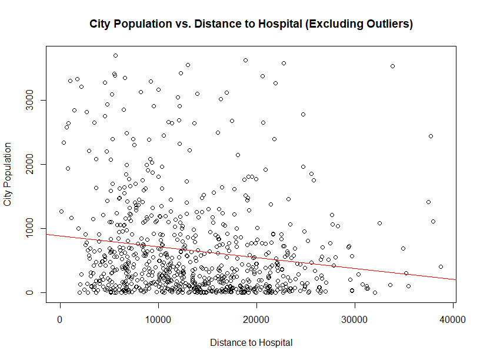
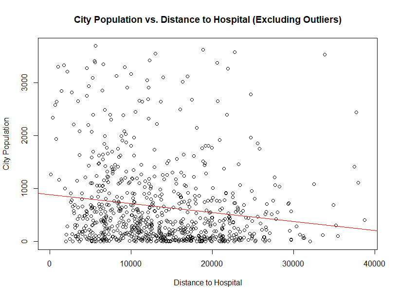
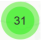
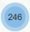

Hospital Accessibility in Bulgaria
 



Click here for layers
Search cities
Search provinces
Legend
 Hospital Clusters City Clusters
Click on the hospital icon to get
more information about a particular hospital.
Click on a province to find the total number of
state hospital beds in the province.